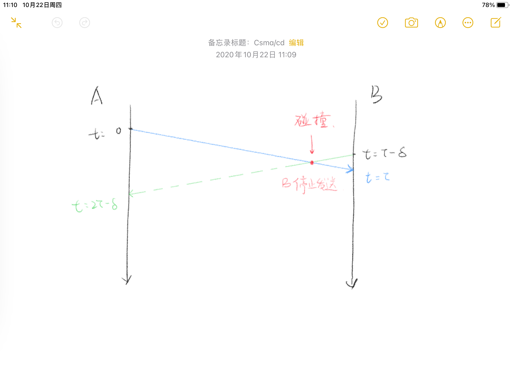
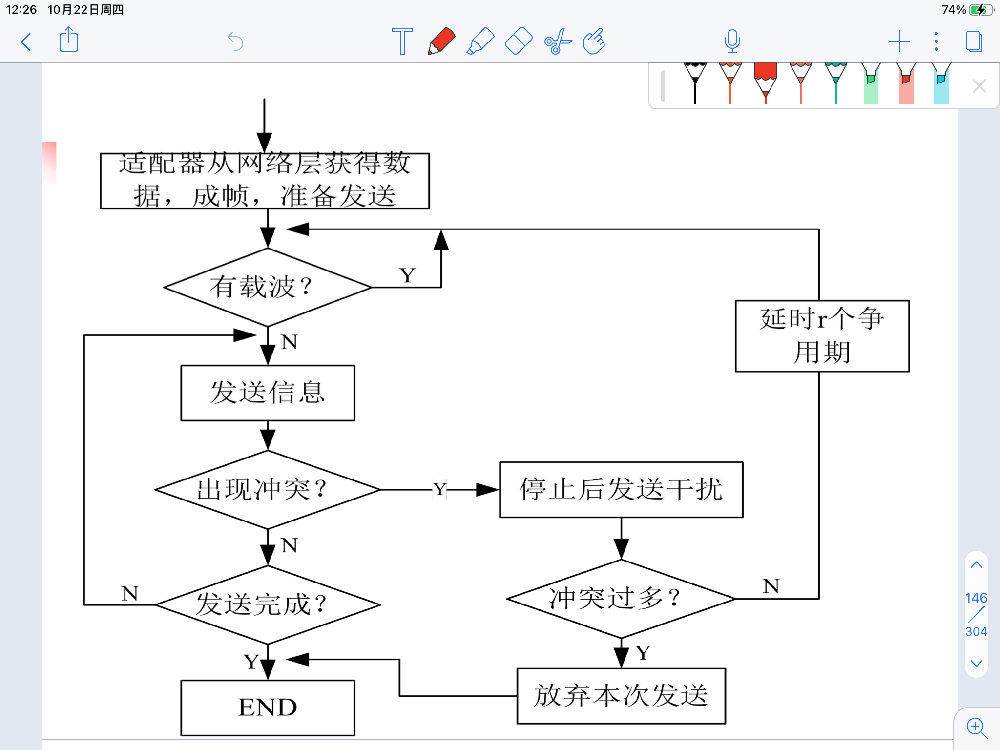
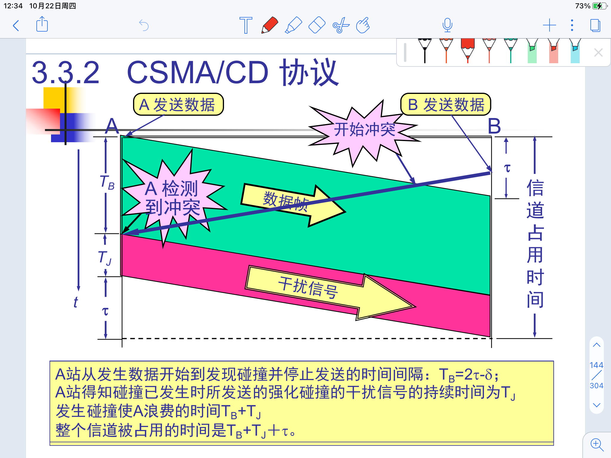
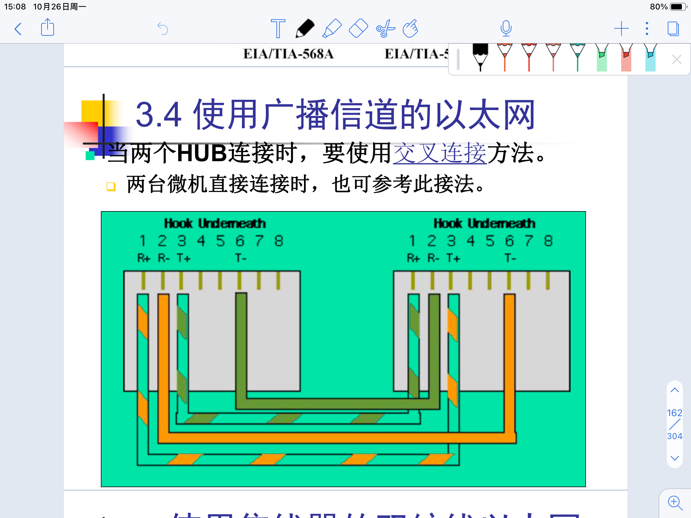
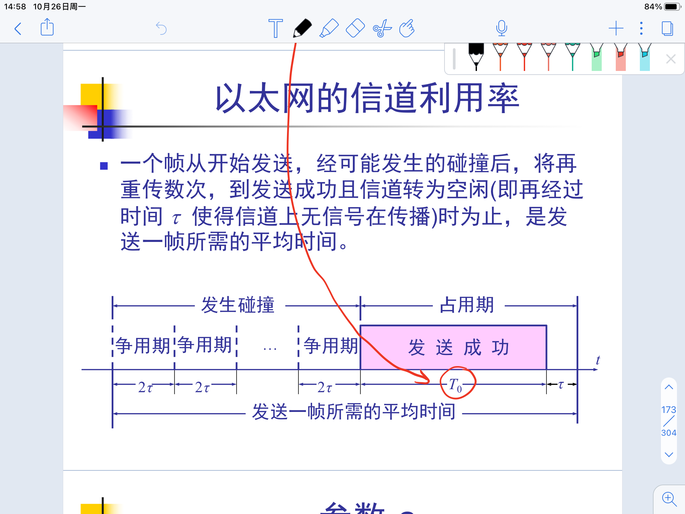
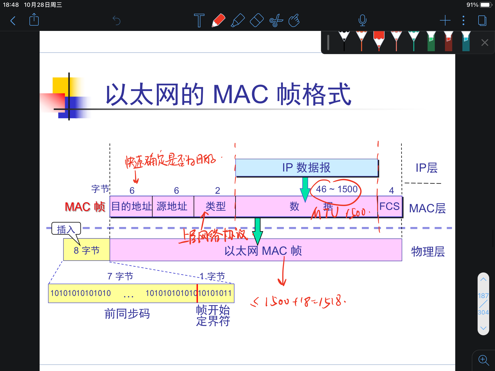
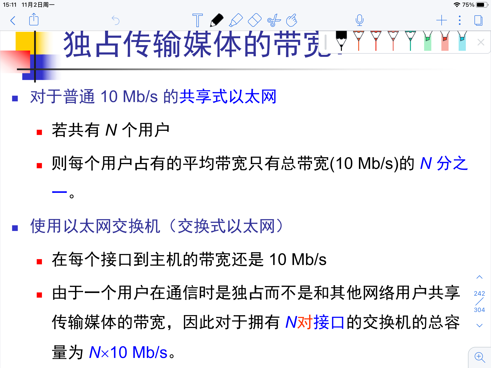
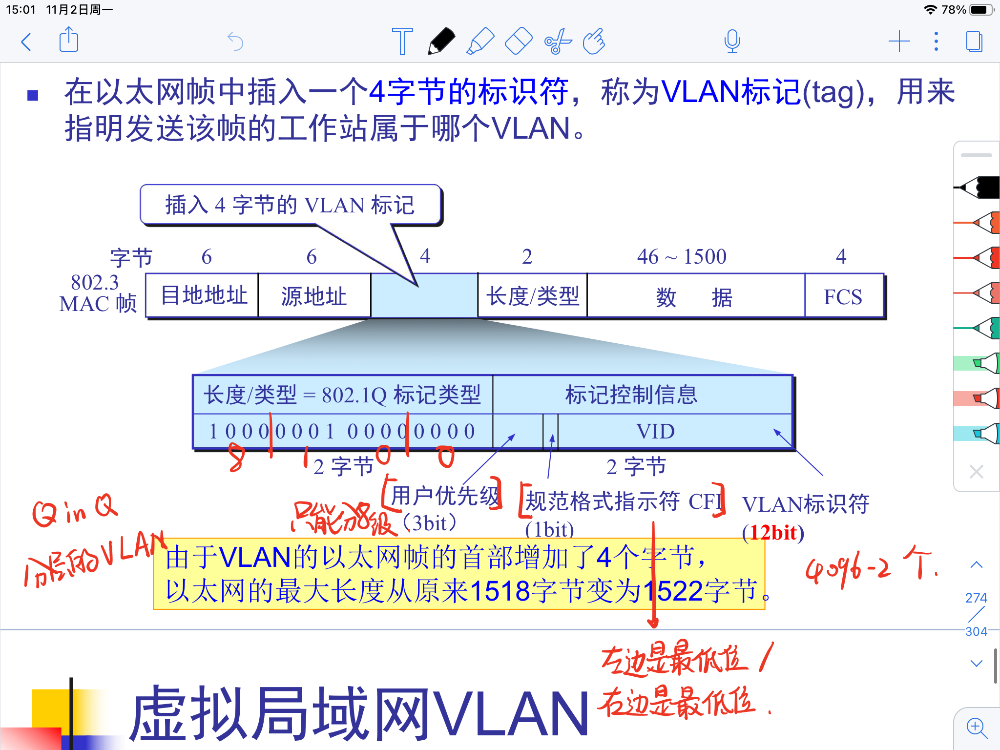

数据链路层的信道种类
- 点对点信道
- 一对一通信
- 广播信道
- 一对多
- 需要专门的协议
- 点对点信道
链路与数据链路
- 链路指一条无源的点到点的线路
- 物理线路加上通信协议 / 实现通信协议的软硬件就形成了数据链路
数据链路层的传输单位是帧 Frame
数据链路层解决的三个基本问题
- 封装成帧
- 透明传输
- 差错控制
链路层的基本功能
封装成帧
- 添加首部尾部进行帧定界
SOHStart_of_headerEOTEnd_of_transmission - 帧定界符是特殊的控制字符
透明传输
- 透明就是不透明
- 透明传输使得不用关心下层的传输，所采用的设备只是一个通道的作用
- 当传输二进制文件中出现定界符序列时，在这个序列之前添加
ESC进行转义 - 称为 字节填充 / 字符填充
- 在前面的非归零反相编码 NRZI 中有提到比特位填充
bit_stuffing
- 在前面的非归零反相编码 NRZI 中有提到比特位填充
- 先转义还是先封装?
差错控制 / 差错检测
- 误码率 BER
- $P_e = \frac{N_e}{N}$
- 传错的除以总的
- 噪声的类型
- 热噪声
- 时刻存在、强度低
- 高斯白噪声
- 引起随机差错
- 冲击噪声
- 外界电磁干扰引起、强度高
- 闪电
- 引起突发错
- 热噪声
- 纠错码与检错码
- 纠错码适用于错误出现多的情况，可以由接收方发现错误并纠正
- 检错码适用于错误出现较少的地方，例如有线网络，发现出错后不进行纠正，直接抛弃
- 常用检错码
- 奇偶校验
- 最后添加一个校验位
- 统计数据码中1的个数
- 循环冗余编码CRC
- 有纠错能力，但是数据链路层只用它来检错
- 奇偶校验
CRC
- 生成多项式
- 除数，长度为生成多项式最高项的次数，翻译为二进制为多项式每一项的系数
- FCS
- 帧检验序列
- CRC是生成FCS的一种方法但不是唯一方法
- 无差错接受
- 凡是接受的帧，都可以以非常接近于1的概率认为它正确的
- 也有可能因为噪声，所有的位变成了0，但是概率非常小
点对点协议 PPP
- PPP 既能面向Bit也能面向字节 / 字符
- 点对点通信
- 只支持全双工
- 使用广域网进行串行通信
需要满足的要求
- 简单
- 链路层功能
- 封装成帧
- 透明性
- 差错检测
- 对上与对下
- 多种网络层协议
- 多种类型链路
- 检测连接状态
- 最大传送单元
- MTU
- 不包含帧头帧尾
- 发送过程中逐步进行调整
- 高层协议根据链路层的MTU进行分片
- 网络层地址协商
- 数据压缩协商
不需要的功能
纠错
- 链路层不要求可靠性
流量控制
- 流量来自于端系统的进程，进程间通信由TCP协议负责
序号
- PPP不保证可靠性
- 实际上链路层的传输本就很可靠
多点链路
- PPP只支持点对点
半双工 / 单工链路
PPP只支持全双工链路
组成部分
- 一个将IP数据报封装到串行链路的方法
- 面向字符的异步链路
- 面向比特的同步链路
- 链路控制协议
LCPLink Control Protocol- 与物理层交互
- 一套网络控制协议
NCPNetwork Control Protocol- 与网络层交互
- 每个协议支持一种不同的网络层协议
帧格式
- 首部
- 定界符 / 定界字节序列 0x7E
- AC 固定的两个部分，但是说不准以后会有用
- 协议
- 0x0021 信息部分为IP数据报
- 0xC021 信息部分位PPP链路控制数据
- 0x8021 信息部分位网络控制数据
- 信息部分
- IP数据报
- 尾部
- CRC检验序列
- 从AC开始到信息部分结束
- 万一以后AC部分有用呢
- 定界符 / 定界字节序列 0x7E
- CRC检验序列
字节填充
- 出现控制字符时，前面添加转义字符0x7D，同时第六个bit取反
零比特填充
- SONET / SDH使用同步传输，同步传输中没有 字符 的概念
- 0x7E = 0111 1110
- 5个连续1之后插一个0，保证不出现连续6个1，就不会出现定界符
同步传输
- 使用时钟信号线或前同步序列保证发送端与接收端的时钟保持同步
- 以数据帧位单位传输
异步传输
- 以字符为单位传输
- 每个字符前添加起始位0，后面加停止位1，表示数据的开始和结束
工作流程
连接从下往上建立，从上往下释放
- 调制解调器建立物理连接
- PC向路由器发送一系列的LCP分组 （0xC021）建立LCP连接
- NCP给新接入的PC分配一个临时的IP地址
- 通信
- NCP释放网络层链接，收回临时IP
- LCP释放数据链路层连接
- 释放物理层链接
挑战握手认证协议 CHAP
在初始链路建立时完成，也可以在链路建立后的任何时刻进行
使用广播信道的数据链路层
IEEE 局域网标准
- IEEE 802.3 CSMA/CD
- IEEE 802.4 令牌总线
- IEEE 802.5 令牌环
局域网的特点
- 网络为一个单位所拥有，地理范围和站点数目均有限
- 局域网的拓扑结构
- 环形 环形令牌网
- 总线
- 两端带有匹配电阻吸收电磁波信号的能量
- CSMA/CD
- 星形
- 树形
- 共享信道
- 静态划分 不能适用于网络的突发性
- 动态接入
- 随机接入 需要解决冲突
- 受控接入
以太网
使用曼彻斯特编码进行数据传输
- 不需要尾部的定界符
- 可以在$1 \over 2$处不跳变
数据链路层的子层
- LLC Logical Link Control
- 面向上层，与传输媒体无关
- MAC Medium Access Control
- 面向下层
- 数据帧真正完成封装的位置
- MAC 子层的功能
- 数据真的封装/卸装
- 帧的寻址和识别
- 帧的接受和发送
- 链路的管理
- 帧的差错控制
- 仲裁介质的使用权
- LLC Logical Link Control
- LLC 子层的功能
- 识别网络层协议，进行封装，加上一个LLC报头
- 接收方可识别使用了何种局域网
- 以太网一统天下，LLC实际作用不大
为什么说以太网很简便
- 无连接
- 不编号，不要求对方发回确认
- 提供不可靠的最大努力交付，高层发现丢失了一些数据帧并进行重传，但是以太网并不知道这是一个重传的帧，而是完全当作一个新的数据帧来发送
适配器
适配器既有链路层的功能，也有物理层的功能
- 适配器的主要功能
- 串行/并行转换
- 数据缓存
- 安装设备驱动程序（设备与CPU通信的媒介）
- 实现以太网协议
CSMA/CD协议
CSMA/CD 是随机征用型的介质访问控制方法
载波监听 多点接入 with 冲突检测
- 载波监听 每个站在发送数据前都要检测总线上是否有其他站在发信息
- 多点接入 多个站点连接在一根总线上
- 冲突检测 边发送数据边检测信道上的信号电压大小，当发现冲突时做出相应处理
Carrier Sense Multiple Access with Collision Detection
以帧为单位传输
- 存在 IFG Interframe Gap 帧间距
- 网络设备和组件在接受一个帧后，需要一段时间恢复为接受下一帧做准备
- IFG 最小为96比特时间
站模型
各个站点相互独立，以固定速率产生数据帧。某个站点一旦产生新帧，即使被阻塞，也不会有新的帧产生，直到发送完毕
单信道假设
所有通信都是通过单信道进行，任何时刻仅允许一个站点发送，需要争用发送权
冲突假设
若两帧同时发送，则产生冲突，所有站点都能检测冲突，冲突的帧必须重发
时间假设
帧可以在任意时刻发送
侦听假设
所有站点都可以侦听到当前信道的状态，若忙则等待
但是当某个站监听到总线是空闲时，可能总线并不是真正空闲，因为信号的传播需要时间，也就是之前提到过的传播时延
策略：
- 非坚持 忙则不等，过会再来看
- １坚持 一直等待，直到空闲
- Ｐ坚持 以概率为P进行等待
传播时延对载波侦听的影响
A在 $t=0$ 时刻发送信号，B在$t = \tau - \delta$ 发送信号，两者信号在 $t = \tau - \frac{\delta}{2}$ 时刻碰撞，B在$t = \tau$时刻检测到碰撞，A在$t=2\tau-\delta$ 时刻检测到碰撞，$\tau$指传播时间。

先发送的一方较后检测到冲突。
CSMA/CD的重要特性
- CSMA/CD不能进行全双工通信，只能进行半双工通信 （而PPP只支持全双工通信）
- 每个站在发送数据之后的一段时间内，存在着遭遇碰撞的可能性
- 时间的从长短取决于发送方到接收方的距离
- 发送的不确定性使得整个以太网的平均通信两远小于以太网的最高数据率
- 以太网不能保证某一时间内一定能把自己的数据帧成功发出去
- 因此以太网必须轻负载，百分之三十左右
关于碰撞
争用期
在发送数据后至多 $2\tau$ 时间可以知道是否发生冲突，这段时间称为争用期或碰撞窗口，经过这段时间后还没有检测到碰撞，则说明本次传输不会发生碰撞
- 所有以太网取 $51.2 \mu s$ 作为争用期长度
- 以太网的设计决定了最长的2RTT不会超过 $51.2 \mu s$
- 对于 10Mb/s 的以太网，争用期内可以发送 512bit 即 64 字节
- 发生冲突一定是在前64字节以内
- 最短的有效帧长为64字节
- 或者说争用期的长度是512比特时间
截断二进制指数类型退避算法
- 碰撞之后退避一段时间再发送
- 基本退避时间是$ 2\tau $ （512比特时间），在此基础上乘以$[0, 1, \dots, (2^k - 1)]$中随机一个数，$k$是重传次数，最大为$10$
- 争用期的若干倍数
- 重传$16$次还是失败，直接丢弃
- 会出现捕获效应，越退越倒霉
碰撞发生后
- 检测到碰撞立即停止发送数据，并发送干扰信号，让其他主机知道发生了碰撞

- 时间的浪费

整个发送过程
准备发送
适配器从网络层获得一个分组，加上以太网的首部和尾部，组成以太网帧，放入适配器缓存中，准备发送
检测信道
在96比特时间内（IFG 帧间距）没有检测到信道上有信号，就发送
发送
发送过程中持续检测信道，若检测到碰撞，就终止发送，并发送干扰信号
终止发送后
执行指数退避算法，等待$r$ 倍的512比特时间，继续检测信道
总结
先听后说，边听边说
一旦冲突，立即停说
等待时机，然后再说
使用广播信道的以太网
以太网物理设备的演进
- 粗同轴电缆 10BASE5
- 10Mbit/s，基带信号，最大段长度500m
- 站与站之间大于等于2.5m，网络最大跨度2.5km
- 中继器：信号的整形与放大
- 收发器：发送、接收、冲突检测、电气隔离
- 粗缆以太网的冲突检测不靠网卡进行
细同轴电缆 10BASE2
- 10Mbit/s，基带信号，最大段长度约等于200m
- 没有外置收发器
- 冲突检测由网卡完成
双绞线 10BASE-T
- 使用RJ45连接器
- 所有站点与集线器相连接
- 集线器：信号放大与整形，是物理层设备
- 两个集线器连接时要使用交叉链接法
- 帧长度可变，最大1518个字节，其中18个字节的MAC头尾，1500个字节的IP数据报
- 光纤 10BASE-F
RJ45连接头
锁扣朝上，从左到右编号1-8

- 为什么要两发两收
- 传送的是差分信号，用两个信号的差值作为传输的信号，相当于放大，更容易识别
集线器的特点
- 逻辑总线
- 多借口转发器
- 转发比特，不进行碰撞检测
- 工作在物理层
以太网的信道利用率
一些时间
- 争用期长度为$2 \tau$，是RTT的两倍
- 帧长为$L$
- 数据发送率为$C$
- 帧的发送时间 / 发送时延 / 传输时延 为$\frac{L}{C} = T_0$
发送一帧需要经过若干个争用期，然后经过发送时延和传输时延

$a = \frac{\tau}{T_0}$，$a$小则说明信道利用率高，$a$大则说明每碰撞一次都会浪费许多信道资源
减小连线长度 / 增加帧长
理想情况下，极限信道利用率为，此时不发生碰撞
以太网的MAC层
- 硬件地址 / 物理地址 / MAC地址
- 一个主机多个网卡的话就有多个MAC地址
- MAC地址应当理解为某个接口的标识符
- 网卡使用MAC地址检查某个帧是不是发给自己
MAC帧的格式
最常用的是以太网V2标准的格式，IEEE802.3的格式和V2相差无几，我们研究的重点是以太网的V2协议。

类型字段用来表示上一层使用的是什么协议
- 不一定是网络层，比如PPP协议，PPPoE
为什么先是目的地址再是源地址
- 方便解析，能快速判断是不是发给自己的
在使用VLAN虚拟局域网的时候MAC帧的长度可能会超过1518
- 1500字节的数据部分
- 目的地址6，源地址6，类型2，FCS 4
0x0800表示IP，0x0806表示ARP最后的FCS校验全部的内容
- 不包含帧定界符，因为使用曼彻斯特编码，时钟周期中间不跳变即标明发送结束，不需要帧定界符
- 不需要帧定界符也就不需要使用字节插入来实现透明传输
当数据字段的长度小于46字节时，再数据字段后面加入整数字节的填充字段
- MAC层因为没有长度计数，所以MAC层并不知道有填充，填充也不发生在MAC层
- 填充发生在网络层或者有长度指征的层
- 例如IP协议有一个总长度字段，表示MAC层的真实数据字段
如何计算传输效率
- $ \frac{X}{X + 18 + 8 + 12}$
- 18字节的控制信息，8字节的前同步码，12字节的帧间隔IFG
- 前同步码是一串规律的01序列，用于告知接收方发送方的时钟序列，最后两个11表示准备发送
- 同步传输，所以需要前同步码
无效的MAC帧
- 数据字段长度不在46 ~ 1500字节之间
- 46 + 18 = 64，恰好是可以接受的最短帧长
- 参看 CSMA/CD / 关于碰撞 / 争用期
- 以太网对于无效的MAC帧直接丢弃，不负责重传，由更高层负责
- 无效帧的出现不一定因为发生了碰撞。例如断电。
- 数据字段长度不在46 ~ 1500字节之间
IEEE 802.3的MAC协议
- 区别仅在于，第三个字段是长度或类型。长度和类型只能有一个，大于
0x6000时表示类型， 小于0x6000时表示长度 - 因为长度最大不会超过
0x6000 - 当实际长度与长度字段不同时被视为无效帧
- 强行让LLC发挥作用
无效的MAC帧
- 802.3协议中数据字段的长度与长度字段不一致
- 帧的长度不是整数个字节
- FCS检测出错
- 数据字段的长度不在46 ~ 1500字节之间
扩展以太网
在物理层扩展以太网
- 使用多个集线器级联
- 把多个碰撞域合并成一个碰撞域
- Collision Domain
- 所有可能发生冲突的站点的集合
- 冲突域被看作物理层的感念
- 缺点
- 通信效率会下降，但是使得不同局域网可以通信，扩大了以太网覆盖的地理范围
- 总的吞吐量没有提高
- 数据率不同的碰撞域连接起来会使得较快的无法发挥出自己的吞吐量
在数据链路层扩展以太网
使用网桥 / 转发器
- 根据MAC地址进行转发和过滤
过滤通信量、增大吞吐量、划分冲突域 / 碰撞域
缺点
- 需要存储转发，增加了时延
- 转发前执行CSMA/CD算法
- 没有流量控制，帧多的时候会导致缓存空间不够，发生帧丢失
- 不同MAC子层的网段桥接在一起时延更大
- 只适合用户数不太多，通信量不太大的局域网
广播风暴
- 广播域
- 数据能广播到的范围，能收到同样广播的设备的集合
- 是链路层的概念（冲突域是物理层的概念）
- 产生于网络拓扑的设计和连接问题
使用交换机扩展以太网
网桥
目前所有的标准网桥都必须支持透明网桥，源路由网桥为可选配置
透明网桥
透明网桥的特点
- 使用最多
- “透明”，网桥对于站点来说是看不见的
- 即插即用，不需要人工配置转发表
- 需要配置转发表的为静态网桥
- 网桥的转发表不宜过大，有些旧的地址应该淘汰
- 网络拓扑可能变化
- 可能由于更换网卡导致MAC地址变化
- 不是所有的站点总是接通电源
- 有的站点从不发送数据或者长时间不发送数据
透明网桥的缺点
- 不能充分利用网络资源，尤其不能保证最佳路由（由于生成树算法导致相距很近的节点可能需要绕圈子）
- 为了防止广播风暴的产生，透明网桥只能使用生成树，不能保证每条路由最佳，也不能进行负载均衡
网桥自学习算法
分为自学习和转发两个过程
- 每一次转发都可以得知发送站相对于自己的方向（源地址、进入的接口、时间）
- 如果之前没有与源地址匹配的项目就插入转发表，若有则更新转发表
- 但是帧从接口X进入网桥不代表帧发送站在X的网段上
- 当转发表中无目的地址时无条件进行转发到所有其他接口，记录下发送站相对于自己的方向
- 当目的地址和源地址在网桥的同一方向时不需要转发，直接丢弃，转发表不变
- 一个网桥丢弃帧不代表所有的网桥都会丢弃帧
- 网桥的转发需要拆帧成帧，集线器转发只是整型、放大
透明网桥的生成树算法
- 为了解决广播风暴的问题
- 当拓扑结构中存在环的时候求其中的生成树,消除图中的环路，从而保证两个站点之间只有一条路径。
- 最小序号网桥作为生成树的根
- 网桥为边，网段为节点
源路由网桥
- 发送帧时，详细路由信息放在帧的首部
- 发送数据帧之前，先发送发现帧，发现帧记录经过的路由，到达目的之后按照记住的路由返回
- 源站根据这些路由得到一个最佳路由进行发送
- 不再透明
- 发现帧还能够帮助源点确定整个网络可以通过的帧的最大长度
- 可以实现负载均衡
- 可以使用最佳路由
多接口网桥 / 以太网交换机
以太网交换机实质上是一个多接口的网桥，交换机出现之后网桥很快被淘汰了
- Multiport Repeater = Hub
- Multiport Bridge = Switch
通常工作在链路层，常被称为第二层交换机
交换机本质上和网桥一样
- 网桥传统上基于软件，交换机基于硬件
- 由数据转发的逻辑部分和输入输出端口组成（input / output port）
- 两者等效而非等价
- 交换机的和网桥一样缩小了网络的冲突域，一个端口就是一个冲突域
- 一个端口连接一个计算机时，仍采用CSMA/CD的控制方法
- 只要网络上的用户不同时访问一个接口，而且是全双工通信，就不会发生冲突
- 网桥传统上基于软件，交换机基于硬件
有的交换机还具有差错控制的功能
能够提高带宽

工作原理
- 收到一个包时可以知道源MAC的机器连在哪个端口的方向上
- 之前有过这一项就更新，没有就添加
- 转发包时在转发表中查找目的MAC地址
- 如果有则直接复制到目的端口上
- 没有则泛洪到所有端口
特点
- 以太网交换机的每个接口都直接与主机或者另一个集线器相连
- 一般使用全双工的工作方式
- 此时CSMA/CD的单信道假设不再成立
- 能同时联通多对接口，每一对相互通信的主机都可以无碰撞的传输数据
- 和透明网桥一样，即插即用，使用自学习法逐步建立转发表
- 因为用硬件实现，转发速度较快
交换技术的种类
- 直通方式
- 只检查包头，把数据包转发到输出端口
- 转发速率高，但是会转发错误帧
- 存储转发方式
- 缓存数据包，进行CRC检验，过滤掉不正确的包
- 可以让错误包提前过滤掉，但是牺牲效率
- 无碎片直通方式
- 只检查数据包的长度够不够64字节，只去除无效帧
- 介于以上两者之间，比较平衡的方式
虚拟局域网 VLAN
由IEEE 802.1Q定义
- 一些局域网网段构成的与物理位置无关的逻辑组，这些网段有某些共同的需求
- 每个VLAN的帧都有明确的标识符，标明这个帧属于哪个VLAN
- 所以帧长会超过1518
- 
- 虚拟局域网是局域网的一种服务，而非另一种新型的局域网
优点
- 安全性
- 降低负载的相互影响
- 防止广播风暴
特点
- VLAN中的每一个站点都可以听到同一个VLAN上的其他站点发出的广播
- 不会产生广播风暴
- 需要路由器或者第三层交换机
- VLAN的工作站可以在不同的局域网（网段）中，也可以不在同一楼中（地理位置）
划分
根据端口来划分
- 物理层
- 一个或多个交换机上的几个端口划分为一个逻辑组
- 一个集线器上的站点只能属于同一个VLAN
根据MAC地址来划分
- 数据链路层
- 可以实现同一广播域内站点的自由移动
- 但是需要对大量毫无规律的MAC地址进行操作
根据网路层来划分
- 网络层
- 按照站点的IP地址来定义广播域，形成虚拟IP子网